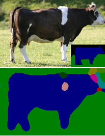
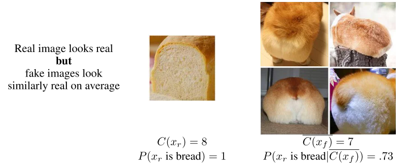

Recently I have been working on semantics segmentation projects. I often encountered issues of random patches in the prediction result. One of the potential cause of this problem is due to the lack of the global context awareness. Xingtong, the deep learning expert in our lab, gave me the suggestion of using adversarial loss to mitigate this problem. This idea is very interesting, yet seems to be under-explored due to the instability of the GAN. I will share some of my own experience. However, this post does requires some prior knowledge of GAN and semantics segmentation. I recommend to get some background knowledge before reading this post.
Semantics Segmentation and Conditional Random Field
Semantics segmentation is a task trying to identify what is what in a given image, i.e. classify each pixel. Theoretically stacked-convolution has unlimited growing receptive field with the formulation of $$r_n = (r_{n-1}-1)\times s + k - 2p $$ where \(r_n\) and \(r_{n-1}\) are the receptive filed of layer \(n\) and \(n-1\), \(s\) is the stride size, \(k\) is the kernel size and \(p\) is the padding size. For example, if we have two convolution kernels stacked together, with size \(k=3, s=1, p=0\), the resulting receptive field of layer 1 and 2 are \(r_1=3\) and \(r_2=5\) respectively. However, it has been shown experimentally that this theoretical unlimited receptive field has never been reached [1]. Thus, the global context is lost during the segmentation process, leading to undesirable random patches in the segmentation result. You will likely see patches of other classes inside one class as shown in the image below, which is not supposed to happen if global context is actually taken into account.
 Random patch appears in the cow segmentation. Top image is the input, with ground truth on the bottom right. Bottom image is the predicted segmentation result.Traditionally, conditional random field (CRF) is used to mitigate the patch issue by looking at the neighbor pixel's segmentation [2]. $$E(\pmb{x}) = \sum_i \theta_i (x_i) + \sum_{ij} \phi_{ij}(x_i,x_j)$$ The formulation of CRF has two components, the unary potential \(\theta_i(x_i)\) and pairwise potentials \(\phi_{ij}(x_i,x_j)\). The unary output comes from the deep learning segmentation model, which is the cost of pixel \(i\) taking the label \(x_i\), i.e. $$\theta_i(x_i) = -logP(x_i).$$ On the other hand, the pairwise potential models the smoothness of the prediction, by looking at the cost of assigning labels \(x_i\) and \(x_j\) simultaneously. This is usually formulated as $$\phi_{ij}(x_i,x_j) = \mu(x_i,x_j)\sum_{m=1}^{K}w^m k^m(\pmb{f_i},\pmb{f_j})$$ where \(k\) is a Gaussian kernel takes in the absolute difference of feature vectors \(\pmb{f_i},\pmb{f_j}\). The more similar feature vectors are, the output will be larger. The intuition behind this is that if two pixels are assigned to different classes, the closer the feature vectors, the more penalty the model will get (since they should belong to the same class). Characteristics, such as distance and appearance, are taken into account of to improve the smoothness. The \(\mu(x_i,x_j)\) and \(w^m\) can be learned from the data, representing the label compatibility and linear combination weights respectively.
While this is intuitive, this optimization problem is practically intractable since you have to look at every pair in the input. There are different development to speed the algorithm up by just looking at adjacent pixels [3] or by using a recurrent network architecture [4]. However, in this post, I will look at the problem from another perspective.
Adversarial Loss
Is there a way to enforce high-level consistency by taking the whole image into account? This is where adversarial loss comes into play. The earliest reported study that I have found is from Facebook [5]. The adversarial loss, originally comes from Generative Adversarial Network (GAN), where a two player game is ongoing in the training process. The two players are called generator (G) and discriminator (D). The generator G, tries to produce a realistic image that fools the discriminator. While the discriminator D, tries to figure out if the image from the generator is real or fake.
How can we use this for semantics segmentation? The idea is to replace the generator with our segmentation model, which produces a synthetic segmentation label. We will feed this segmentation output to the discriminator, and let the discriminator decide if the segmentation output is labeled by a human or network. Remember the patches problem? This should never happen in a human-annotated segmentation label, thus can be a visual cue for discriminator. Therefore, the generator (our segmentation model) is forced not to predict random patches. Moreover, the network will learn to make the edges sharp instead of blurry, just like a ground-truth label. This way, the whole image is considered and thus global context can be achieved.
Thus, during training the loss becomes a weighted sum of two types of losses $$L = L_{PX} + \lambda L_{G}$$ where \(L_{PX}\) is the pixel loss from normal segmentation task, such as cross-entropy loss; \(L_G\) is the loss from the difference of generated and manually-labeled segmentation map. While we are training the segmentation module, we will also train the discriminator by giving it both real and fake images with the loss of \(L_D\), which quantifies how unsatisfying the discriminator is at doing this classifying job. Now the question is how to formulate the losses \(L_G\) and \(L_D\).
It's All About The Loss Function
If you are familiar with GAN, you will know that GAN is all about loss. When Goodfellow et. al first introduced GAN (we call this standard GAN), they only modeled the loss to minimize the JSD in form of $$L = \min_G \max_D \mathbb{E}_{x\sim\mathbb{P}}[log(D(x))] + \mathbb{E}_{z\sim\mathbb{Q}}[log(1-D(G(z)))]$$ Here, \(\mathbb{P}\) denotes the real data distribution, and \(\mathbb{Q}\) denotes the fake data distribution to feed into the generator (usually Gaussian). However, the problem of JSD is that not everywhere has gradient (where target distribution and source distribution have disjoint supports), thus leading to the gradient diminishing problem.
Recently, Wassertein GAN (WGAN) is proposed to mitigate the diminishing gradient problem by using W1 distance (Earth-Mover distance) instead of JSD, which is formulated as $$L = \min_G \max_{D\in\mathcal{D}} \mathbb{E}_{x\sim\mathbb{P}}[D(x)] - \mathbb{E}_{z\sim\mathbb{Q}}[D(G(z))]$$ The \(\mathcal{D}\) is the set of 1-Lipschitz functions (to enforce continuous gradient).
Initially, I tried WGAN to enforce high-level consistency. If we break the WGAN loss equation down, we will have $$L_D = \mathbb{E}_{x\sim\mathbb{P}}[D(x)] - \mathbb{E}_{z\sim\mathbb{Q}}[D(G(z))]$$ and $$L_G = - \mathbb{E}_{z\sim\mathbb{Q}}[D(G(z))]$$ When I implemented this in my framework, I saw something very interesting happened. Initially, the network will try to learn how to segment the input. After a few epochs, the segmentation model gave up on the task of segmentation. Instead, it focuses on entirely on fooling the discriminator by generating bizarre patterns, very far from the ground truth.
Why? I found that the problem is mainly that the generator loss \(L_G\) is unbounded compared to the pixel loss \(L_{PX}\). If you pay close attention to the \(L_G\), you will see that it does not really have a minimum, the theoretical minimum can be negative infinity. On contrast, the pixel loss can only go down to zero. Therefore, after a few epochs, the network will give up on reducing pixel loss, but focus entirely on the generator loss. So how to solve this problem?
Entering Relativistic Discriminator
The idea of relativistic discriminator comes from the fact that after discriminator and generator are trained to a perfect state, the learning should come from both real and fake images [6]. What I mean is that the discriminator should be trained to think the real images are more realistic than the fake ones instead of just thinking both of them look real. Below, you can see an example. TThe generator is trained such that all Corgi look like bread. However, because Corgi looks less real than real bread, the discriminator should be able to express his confidence relatively.
 Illustration of relativistic GAN when both real and fake input look real.Thus, the loss is instead formulated relatively as $$L_D=-\mathbb{E}_{x\sim\mathbb{P},z\sim\mathbb{Q}}[log(\sigma(D(x)-D(G(z))))]$$ and $$L_G=-\mathbb{E}_{x\sim\mathbb{P},z\sim\mathbb{Q}}[log(\sigma(D(G(z))-D(x)))]$$ If you remember, \(D(\cdot)\) will be higher when the input looks real. Therefore, the discriminator aims to identify that the real looks more real than fake, and the generator aims to make the fake images look more real than fake images.
How to make the loss bounded? Xingtong has discovered that if the loss is modified slightly, the result will be better. I have reached the same conclusion as well. The modification is that $$L_D= \| \mathbb{E}_{x\sim\mathbb{P},z\sim\mathbb{Q}}[D(x)-D(G(z))] - 1 \|$$ and $$L_G=\| \mathbb{E}_{x\sim\mathbb{P},z\sim\mathbb{Q}}[D(G(z))-D(x)] - 1 \|$$
If you came across this post and tried this loss, let me know your result!
[1] Luo, Wenjie, et al. "Understanding the effective receptive field in deep convolutional neural networks." Advances in neural information processing systems. 2016.
[2] Krähenbühl, Philipp, and Vladlen Koltun. "Efficient inference in fully connected crfs with gaussian edge potentials." Advances in neural information processing systems. 2011.
[3] Wytock, Matt, and Zico Kolter. "Sparse Gaussian conditional random fields: Algorithms, theory, and application to energy forecasting." International conference on machine learning. 2013.
[4] Zheng, Shuai, et al. "Conditional random fields as recurrent neural networks." Proceedings of the IEEE international conference on computer vision. 2015.
[5] Luc, Pauline, et al. "Semantic segmentation using adversarial networks." arXiv preprint arXiv:1611.08408 (2016).
[6] Jolicoeur-Martineau, Alexia. "The relativistic discriminator: a key element missing from standard GAN." arXiv preprint arXiv:1807.00734 (2018).